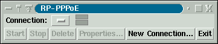
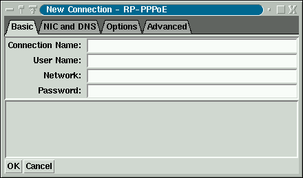
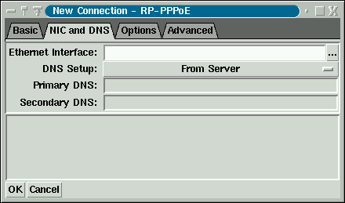
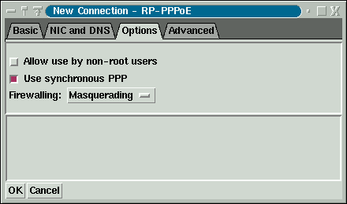
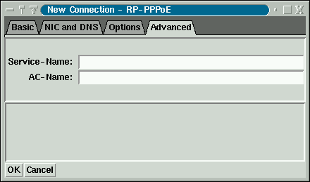
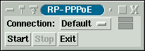
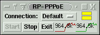

tkpppoe - A GUI for managing PPPoE Connections
Introduction
TkPPPoE is a graphical user interface for managing PPPoE connections. It
performs two different functions:
- TkPPPoE lets you define connection properties. This step must
be done as root.
- TkPPPoE lets you start and stop PPPoE connections. This step
may be done as a normal user, depending on how you configured the connection.
Defining Connections
To define connections, start TkPPPoE as root. You can do this from
a terminal by typing tkpppoe, or from the KDE or GNOME menus
by selecting Internet : TkPPPoE. The following window pops up:

Because you have not yet defined any connections, the connection property
window also pops up:

You can pop up the connection property window at any time by clicking
New Connection... You can edit the properties of an existing
connection by selecting the connection's name and clicking
Properties...
Basic Information
Let's fill in the basic information:
- For Connection Name, enter a unique name for this connection. It
can be anything you like, but must contain only letters, numbers, underscores
or dashes. In particular, it can't contain spaces. If you have only one
PPPoE connection, a good name is Default.
- For User Name, enter the user name supplied by your ISP. Enter
only the user name; do not enter an "@isp.com" part.
- For Network, you may have to enter your ISP's domain name.
(For example, isp.com.) Some DSL providers add this to your user
name; others do not. You may have to experiment a bit. The two most likely
choices are your ISP's domain name, or blank. Try both.
- For Password, enter the password your ISP provided you with.
NIC and DNS
Click on the NIC and DNS tab:

- For Ethernet Interface, enter the Ethernet interface connected
to the DSL modem. It is something like eth0 or eth1. Click
on ... to browse a list of detected Ethernet interfaces.
- For DNS Setup, you have three options:
- From Server means that the system will obtain DNS information from
the PPPoE server. This is the correct choice for most ISPs.
- Specify means that you will enter the IP addresses of your DNS
servers manually. In this case, enter the addresses in the Primary DNS
and Secondary DNS entries.
- Do not Adjust means that you want RP-PPPoE to leave your
DNS setup alone. Use this if you are running your own caching DNS server
or know that you don't want the DNS setup touched.
Options
Click on the Options tab:

- If you want ordinary users to be able to start and stop this connection,
enable Allow use by non-root users. If you do not enable this,
non-root users will be able to monitor the connection, but not control it.
- If you want to use synchronous PPP, enable Use synchronous PPP.
This is recommended as it conserves CPU usage, but may not work on some
(misconfigured) Linux kernels.
- For Firewalling, you have three options:
- Stand-Alone installs a simple firewall ruleset for stand-alone
machines. Use this if you have only a single computer connected to the DSL
modem.
- Masquerading installs a simple firewall ruleset for using
your Linux computer as an Internet sharing device. If you have two Ethernet
cards, you can connect one card to the DSL modem and the other to an
internal LAN. The masquerading firewall ruleset lets internal machines
share the DSL connection.
- None. If you already have your own firewall rules, or you wish
to run servers on your machine, select None. This is not recommended
unless you take steps to secure your machine, and know what you are doing.
Advanced
Click on the Advanced tab:

In most cases, you can leave AC-Name and Service-Name blank.
In some cases, your ISP may require you to enter information in these fields;
contact your ISP for more information.
Controlling Connections
For these examples, run tkpppoe as a normal user (not root).
The main window appears like this:

- To start a connection, press Start. The two LEDs flash red
and grey. If the connection is established, they turn green.
- To stop a connection, press Stop.
The two rectangles to the right of the connection name are the
status LEDs. The top LED corresponds to transmitted data and
the bottom to received. The LEDs are colored as follows:
- Grey -- connection is not established.
- Flashing red/grey -- connection is being started.
- Green -- connection is up, but idle.
- Yellow -- connection is up and data is being sent or received.
- Red -- connection has been lost, but the system is trying to reestablish it.
When a connection is established, two graphs appear:

The left (red) graph shows transmitted packets and the average
transmission speed (in bits per second) over the sample time. The
right (green) graph shows received packets.
Miscellaneous Information
- The connection menu has an entry called User's Manual which
will pop up this user manual (if you have Netscape installed.)
- You can define multiple PPPoE connections, but you should not use
more than one simultaneuously unless you feel comfortable editing scripts
and setting up routing tables. By default, TkPPPoE tries to add a default
route for connections. This does not work well with multiple simultaneous
connections.
- If you exit from TkPPPoE, connections which are up remain up. You
have to explicitly stop connections if you want them terminated.
TkPPPoE is Copyright 2001 by Roaring Penguin Software Inc and
is licensed under the GNU General Public License.
Screenshots show TkPPPoE running under the XFCE desktop, a lightweight UNIX and Linux desktop.